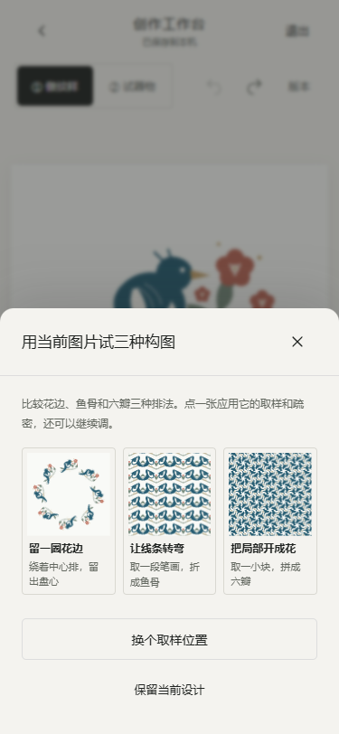
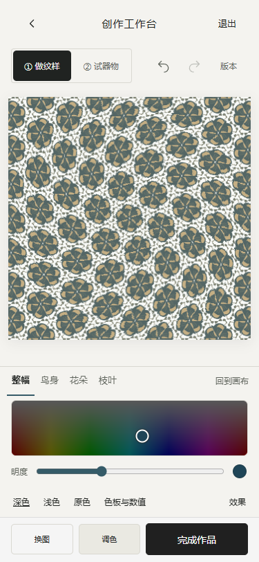

同一份素材的三种构图
打开工作台样式栏的「找灵感」，比较花边、鱼骨折线和六瓣拼花。可以更换取样部位，点选后继续拖动和调色。每次应用占一次撤销记录。


本次在 390px 的 Repper 手机网页走过首次引导、拖动、选样式与效果抽屉，并打开 Metamorphosis 查看类型与强度。我们把设置按需展开的方式用到了效果面板。水波与回旋用本地位移映射改变纹样，可和双色、单色等配色组合。开启后使用整幅画布导出。手机版参考 · 桌面版参考
实现与验收
- prototype/workbench.js、workbench.css 负责灵感预览、试用和分级效果面板。
- prototype/pattern-layouts.js、pattern-texture.js 增加鱼骨和六瓣结构、倾斜参数和整幅变形；同一套输出用于画布、导出与器物贴图。
- prototype/model.js、foundation.js、editor-model.js、work-result.js 保存新参数、历史、快照和作品纹样版本。
- 构建重新生成 index.html 和物之再生-H5-单文件.html。npm test 共 91 项通过，lint 和 build 通过。
- scripts/qa-creative-directions.cjs 在构建入口检验取消、应用、撤销、开关记忆、双色组合、版本恢复、器物预览和作品保存。使用 Edge 手机模拟，覆盖 320、375、390、430px。真机帧率待测。
- scripts/qa-symmetry-pixels.cjs 使用本地位图检验输出像素，覆盖新结构、倾斜和变形类型。scripts/qa-pattern-flow.cjs 验证四种器型及保存恢复。tests/workbench.test.cjs 覆盖新参数的持久化。
本地工作台 · 像素验收结果